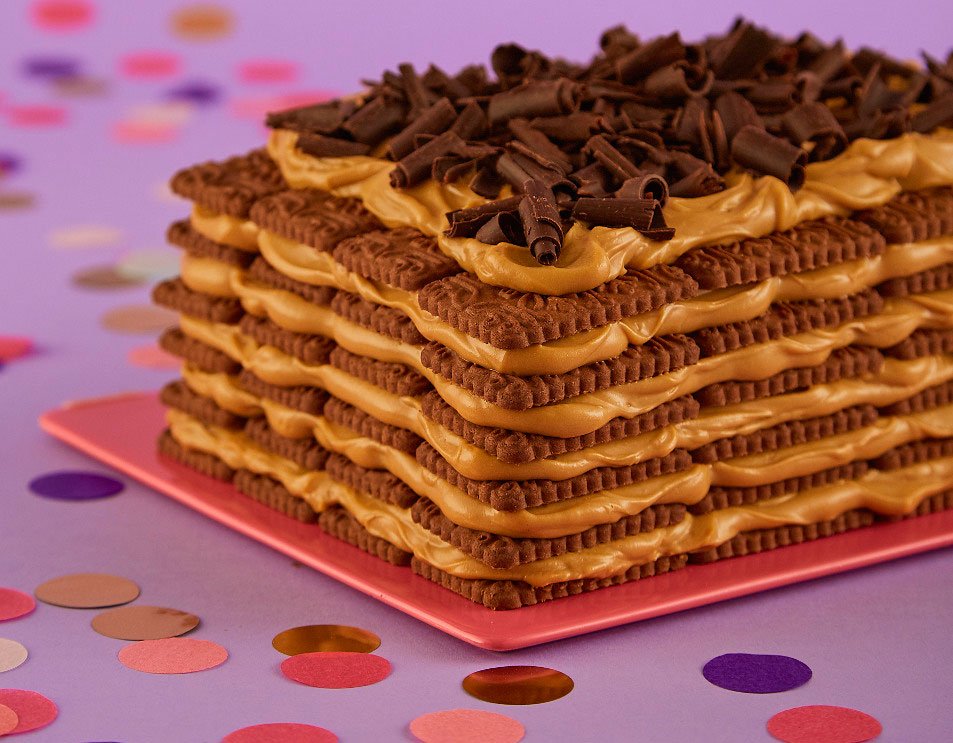

Chocotorta fácil y rápida
Ingredientes
- 500 g de queso crema
- 240 ml de café
- 500 g de dulce de leche repostero
- 750 g de galletitas de chocolate
Preparación
- Retirar el queso crema de la heladera 20 minutos antes de utilizarlo. Lo mejor es utilizar quesos crema firmes, los cuales aportarán más cuerpo a la preparación.
- Realizar el café y dejar atemperar en un bol o plato hondo. Es recomendable utilizar un café de buena calidad.
- Mezclar el dulce de leche con el queso crema hasta obtener una mezcla homogénea.
- Mojar brevemente cada galletita en el café e ir colocándolas una pegada a la otra en el molde, hasta completar toda la base (si es necesario, partir galletitas a la mitad para cubrir huecos). Una vez completada la base, colocar 1/5 de la mezcla de dulce de leche y queso crema y cubrir bien todas las galletitas. Volver a colocar una capa de galletitas remojadas y nuevamente la mezcla, repetir este proceso hasta agotar todos los ingredientes.
- Agregar 1 taza de harina y los polvos de hornear revolver gentilmente con movimientos circulares unas 5 veces.
- Llevar la chocotorta a la heladera entre hasta que tome cuerpo (mínimo 2 horas).
